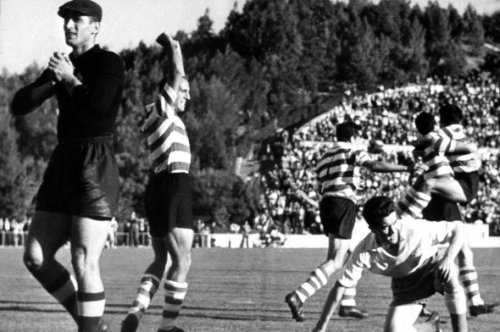
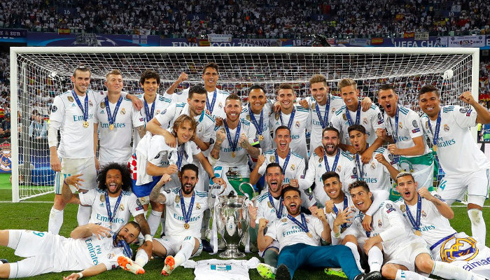

A primeira edição da Copa dos Campeões da Europa ocorreu durante a temporada 1955- 56 com a participação de 16 equipes, a partida da Taça Europeia ocorreu em 4 de setembro de 1955 foi um empate de 3 a 3 entre Sporting CP e Partizan. O primeiro gol na história da Copa da Europa foi marcado por João Baptista Martins do Sporting. A final inaugural ocorreu no Parc des Princes entre o Stade de Reims e o Real Madrid. A equipe espanhola venceu de virada por 4 a 3 e conquistou o primeiro título da competição.
Inicialmete a competição foi criada como Taça dos Clubes Campeões Europeus. O primeiro torneio pan-europeu foi o Challenge Cup, uma competição entre clubes no Império Austro-Húngaro que foi disputada entre 1897-1898 a 1910-1911.
13 atuais países europeus eram parte integrante parcialmente ou totalmente deste Império. O maior campeão deste torneio foi o Wiener AC com três títulos.
Em 1927 foi criada a Copa Mitropa (Mitropa Cup), inspirada na Challenge Cup. O nome é uma contração da palavra alemã "Mitteleuropa", que significa "Europa Central". O Vasas SC de Budapeste é o maior vencedor deste torneio com seis títulos.
A Taça perdeu grande parte do seu status devido à introdução de outras competições europeias de clubes, entrou em declínio e foi disputada pela última vez em 1992.
Em 1930, foi realizada a Copa das Nações (Coupe des Nations), a primeira tentativa de criar um torneio de campeões nacionais da Europa. A competição foi realizada em Genebra, na Suíça entre junho e julho de 1930 com dez clubes campeões nacionais dos seguintes países europeus: Alemanha, Áustria, Bélgica, Espanha, França, Hungria, Itália, Países Baixos (Holanda), Suíça e Tchecoslováquia.
O campeão foi o Újpest da Hungria. Uma segunda edição do torneio nunca foi disputada com seguidos cancelamentos e à interrupção de atividades esportivas causadas pela Segunda Guerral Mundial.
|  |
A competição foi renomeada para a Liga dos Campeões da UEFA (UEFA Champions League) na temporada 1992-93, passando por diversas mudanças de direitos de marketing e tv.
O Olympique de Marselha foi o primeiro competição com novo formato. O Real Madrid foi o primeiro clube bicampeão da Champions League com a conquista das taças de 2015-16 e 2016-17.
O clube madrilenho também é o maior vencedor da competição com 13 títulos.
|  |